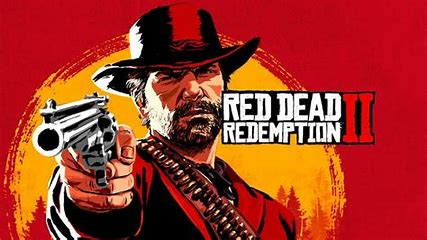
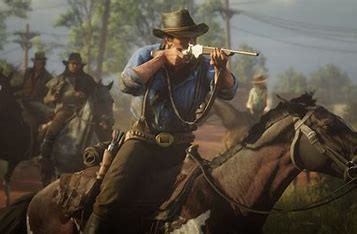
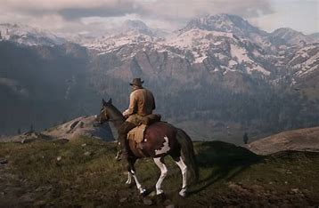

Red Dead Redemption II
Red Dead Redemption 2 è un videogioco action-adventure a tema western del 2018, sviluppato e pubblicato da Rockstar Games per Xbox One, PlayStation 4, Microsoft Windows e Google Stadia. Si tratta del prequel di Red Dead Redemption (2010) ed è il terzo capitolo della saga di videogiochi Red Dead, cominciata nel 2004 con Red Dead Revolver.
È il primo videogioco della sua generazione a necessitare dell'uso di due dischi di installazione su console a causa del notevole spazio che i file occupano. Il 5 novembre 2019 è uscito il supporto ai 4K nativi per le versioni Windows, Xbox One X e Stadia.



STORIA
La storia segue Arthur Morgan, un fuorilegge membro della banda di Dutch van der Linde, in fuga dalle autorità dopo un colpo andato male. Arthur lotta tra la lealtà verso la banda e i suoi crescenti dubbi morali, soprattutto quando la violenza e l’avidità minacciano di distruggerla. Il gioco esplora temi come il cambiamento, la redenzione, l'onore e la decadenza dell’ideale del selvaggio West. Arthur scopre di essere malato e riflette sul senso della sua vita, cercando infine una via per fare del bene. Le scelte del giocatore influenzano il suo destino e il modo in cui viene ricordato. Il gioco si conclude con l’epilogo in cui si impersona John Marston, preparando gli eventi del primo capitolo. Red Dead Redemption II è lodato per la sua trama profonda, i personaggi realistici e il mondo aperto ricco di dettagli.
pagina iniziale